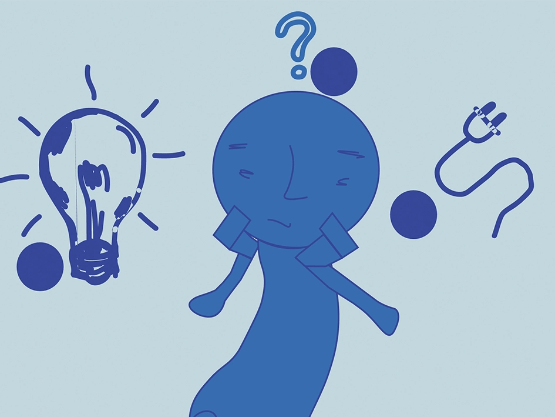
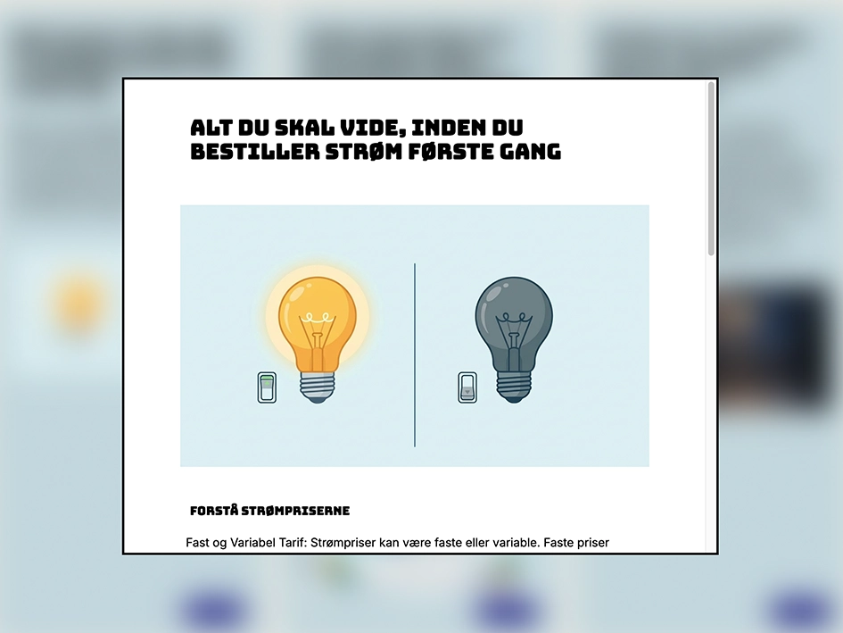
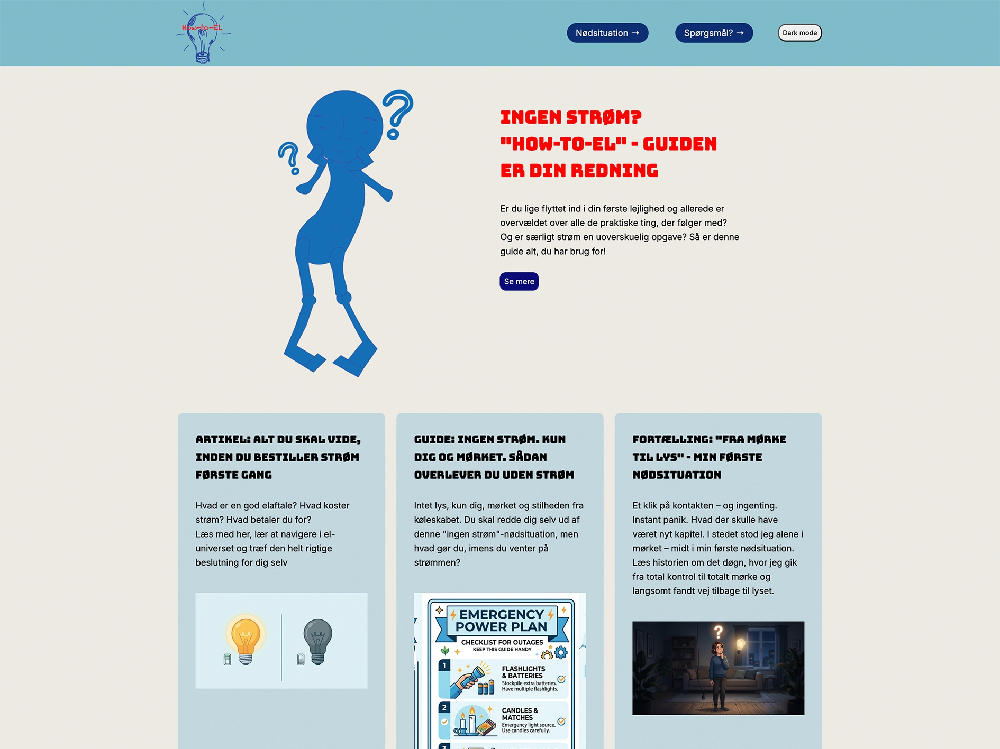
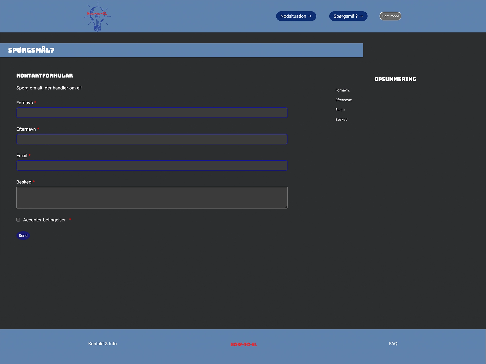

Tema 4 - grundlæggende udvikling
Site: Emergencysite
Formål
Formålet med tema 4 er at arbejde med udvikling af brugergrænsefladen på et site. Brugergrænsefladen udvikles med vigtige værktøjer som Adobe Illustrator, CSS og JavaScript. I temaet arbejdes der med vektorgrafik i SVG-formatet i Adobe Illustrator. Programmeringssproget JavaScript introduceres og bruges til at håndtere funktionalitet på sitet. Derudover opbygges der flere avancerede færdigheder i CSS.

Proces
Udviklingen af emergency-site i tema 4 var en proces med både faglige fremskridt og udfordringer. Temaet havde ligheder med de tidligere temaer, idet jeg skulle arbejde videre i eksisterende kode, men samtidig udvikle et nyt koncept med udgangspunkt i temaet nødsituation. I dette tema var en del af opgaven at arbejde med AI-genereret indhold. Det gav mig en bedre forståelse af mulighederne og begrænsningerne ved at anvende AI i en designproces. Selvom AI gjorde det muligt at producere indhold hurtigt, krævede det stadig kritisk udvælgelse og tilpasning for at sikre kvalitet og relevans. Derudover producerede jeg grafik og tegnede figurer i Adobe Illustrator, som passede til den valgte nødsituation og det AI-genererede indhold. I dette tema udviklede jeg mig endnu mere inden for HTML og CSS gennem arbejde med HTML forms, popup-vinduer, dark mode og transitions, men jeg blev virkelig udfordret af JavaScript. Det var både svært at gennemskue den eksisterende kode og samtidig tilføje JavaScript samt forstå dets funktion. Men arbejdet med dark mode og brugerinteraktioner gav mig en bedre forståelse for, hvordan JavaScript kan forbedre brugeroplevelsen.

Produkt
“Emergency-site” er produktet i tema 4, en hjemmeside om en nødsituation. Hjemmesiden er udviklet til unge mennesker, der har glemt at bestille strøm til deres lejlighed og mangler grundlæggende viden om el- og strømforbrug. Produktet indeholder fire HTML-filer, otte CSS-filer og fire JS-filer. Forsiden indeholder SVG-grafikken samt en CTA-button, der leder brugeren videre til siden om nødsituationen. Under grafikken præsenteres tre AI-genererede artikler med tilhørende CTA-buttons og popup-vinduer. På siden med min nødsituation er SVG-grafikken implementeret med klikbare cirkler, som giver adgang til en trinvis guide. Hjemmesidens tredje side indeholder en HTML form, hvor man kan sende spørgsmål ind. Emergency-sitet indeholder funktioner som dark mode og popup-vinduer, som er udviklet ved brug af JavaScript og CSS for at skabe en mere interaktiv brugeroplevelse.
Se emergencysite her
Læring
Tema 4 og arbejdet med “emergency-sitet” var et udfordrende forløb, fordi der var mange nye værktøjer og forskellige arbejdsprocesser, der skulle kombineres. Jeg synes ikke, at jeg nåede helt i mål med produktet, og det visuelle udtryk blev ikke, som jeg havde forestillet mig. I dette tema lærte jeg at bruge flere værktøjer i Adobe Illustrator, men på grund af mine begrænsede tegnefærdigheder synes jeg, at hjemmesiden fremstår mere legende i sit udtryk og derfor appellerer mere til en yngre målgruppe, end den oprindeligt var tiltænkt. Arbejdet med Adobe Illustrator og SVG-infografik gav mig dog en større forståelse for, hvordan specialdesignede grafiske elementer kan være med til at understøtte et websites identitet og visuelle udtryk. Jeg videreudviklede mine færdigheder inden for CSS gennem arbejdet med transitions, popup-vinduer og dark mode. Efterhånden blev jeg mere sikker i at læse og tilpasse eksisterende kode. Selvom arbejdet var krævende, fik jeg en større forståelse for sammenhængen mellem HTML, CSS og JavaScript. Fremadrettet vil jeg gerne blive mere sikker i JavaScript, da jeg fortsat er ret usikker i det.
